369 Mart Catalog decides how your products are grouped in the shop app. You build the categories a shopper browses — main categories and the sub-categories under them — and choose how each one looks: its colours, its logo and the one line printed under its title. It also answers the app's search box and counts every search, so you can see what customers looked for and what the shop does not stock.
Three values on each product card are now real: the star rating comes from published customer reviews, popularity comes from units actually sold, and the brand comes from the product's Brand. A Products desk shows stock and sales across the whole shop, read-only.
1. Build the groupsMain categories, with sub-categories under them
→
2. Choose the lookColours, logo and one line under the title
→
3. Shoppers browseCategory pages, home tiles and the search box
→
4. Read the demandSearches that found nothing show what to stock
Before you start: Setting up categories is done in the backend by an Owner or a Manager, from 369 Mart → Catalogue. A category only fills up once it has published products in it. Packers, Accountants and Riders do not use these screens, and shoppers need nothing from you — they simply browse and search.
Words you'll see
Word
What it means
Main category
A top-level group, such as Components. It has its own page in the app and a pill in the app's top bar.
Sub-category
A group inside a main category, such as Processors. The app shows only these two levels.
App address
The short web name of a category, such as /cables. It is part of the link a customer sees and may save.
Background / Heading colour
The pale colour behind a category, and the darker colour of its title and ring.
Desk
A screen in the backend laid out like the staff console: tiles at the top, tabs, a search box and rows.
Standing empty
A category with no published product in it or under it.
Trending
The short list of popular searches the app suggests to shoppers.
Found nothing
A search that returned no products — something a customer wanted that you do not sell.
How the manual is arranged
Part 1 – Setting Up builds your category tree, gives each category its look, and covers the full category form for the few things the desk does not change. Part 2 – Everyday Use walks through the three desks — Catalog, Products and Searches — and what the customer sees in the app. Part 3 – Keeping It Secure & In Order covers who can do what, the full search list and privacy.
Part 1 — Setting Up
Done by an Owner or Manager. If your categories already exist and look right, skip to Part 2.
1Where everything lives
Open 369 Mart from the main menu. This module adds:
Catalogue → Catalog — the Catalog desk: your categories, how each looks, and which stand empty.
Catalogue → Products — the Products desk: every product for sale, its stock, sales and storefront.
Catalogue → Searches — the Searches desk: what customers typed into the app and what it found.
Advanced → Catalog (all views) — the plain board, list and form for categories, including the app address and the order.
Advanced → Searches (all views) — the plain list of every search term, with filters.
The three desks are open to Owners and Managers (anyone with the Website designer right). The two (all views) entries are for the Owner only (Administrator (Settings) right).
2Build your category tree
Open Catalogue → Catalog and press New category. The box explains itself: “A new group for the app. Its app address is made from the name.” Fill in:
Name — what shoppers read, e.g. Keyboards. Required: saving without it gives “A category needs a name.”
Under — leave it on None - a top-level category for a main category, or choose the main category a sub-category goes under. Only main categories are offered, because the app shows two levels.
The rest of the box — logo, line under the title, colours — is the look, covered in Steps 3 and 4. The right-hand panel, How it looks in the app, updates as you type. Press Create: a message says the category “is in the catalogue”, and its new row is highlighted in the list.
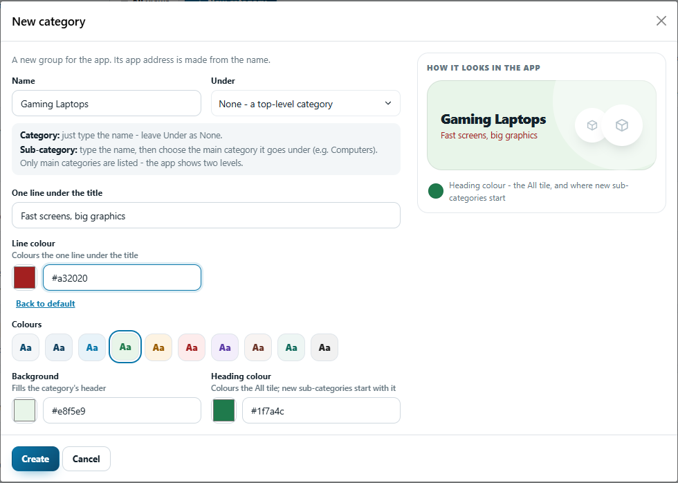
Figure 1 — New category with Under set to “None - a top-level category”: the preview on the right shows the category's header in the Leaf colours, with its line under the title in red.
When you pick a main category in Under, the preview changes to a round tile — that is how the app draws a sub-category. Until you choose colours yourself, a new sub-category starts in its main category's colours.
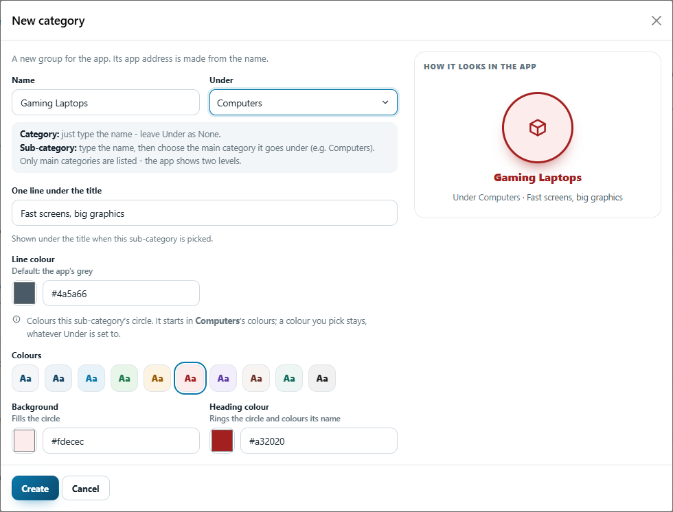
Figure 2 — The same box with Under set to Computers: the preview is now a round tile, here in the Berry colours.
Watch out: There is no third level. A sub-category cannot have sub-categories of its own, and a main category that already has sub-categories cannot be moved under another one — the Under box is locked with “Has N sub-categories, so it stays a main category - move them first.”
Good to know: Each category made here also gets a matching product Category (the one set on each product), and the two stay in step: renaming or moving either one renames or moves the other. A product's Category puts it in the matching category in the app automatically.
3Choose how each category looks
Open a category's Edit or How it looks button on the Catalog desk (or use the New category box). The look is set with:
One line under the title — a short description, e.g. “Farm-fresh produce, picked daily”. For a sub-category it shows under the title when that sub-category is picked.
Line colour — the colour of that one line. Empty means the default: the app's grey, or for a sub-category its main category's line colour. Back to default clears your choice.
Colours — ten ready-made pairs (Default, Steel, Sky, Leaf, Amber, Berry, Violet, Cocoa, Teal, Ink), each shown as “Aa”. One tap sets both colours below, always a pale background with a readable heading.
Background — for a main category it fills the category's header; for a sub-category it fills the circle. Default #f4f6f8.
Heading colour — for a main category it colours the All tile, and new sub-categories start with it; for a sub-category it rings the circle and colours its name. Default #0b4a6e.
Each colour has a colour picker and a box where you can type the code. A colour must be written like #e8f5e9 (a # and six letters or numbers); anything else is refused with “A colour looks like #e8f5e9. … does not.”
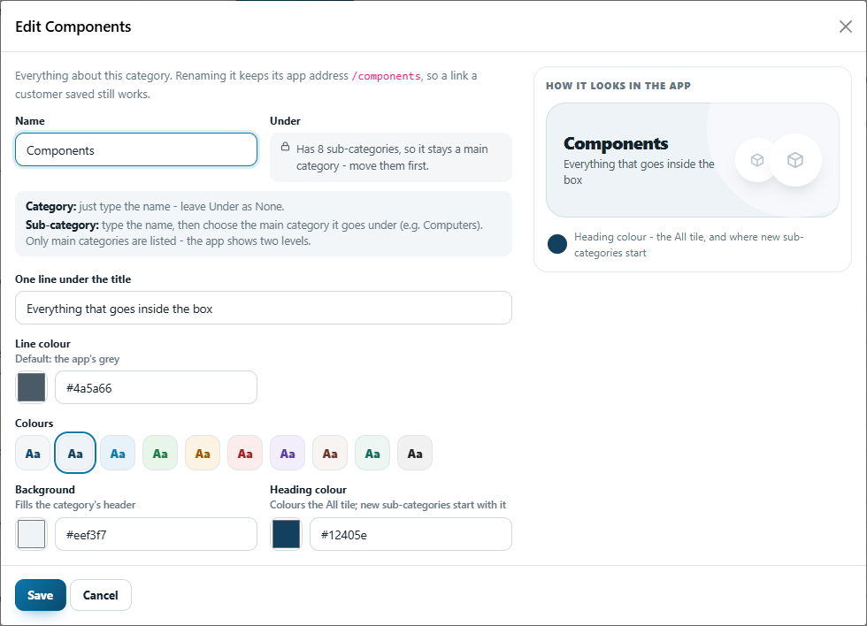
Figure 3 — Edit Components: the line under the title, Line colour at its default, the ten colour pairs with Steel chosen, and the header preview. Under is locked because Components has 8 sub-categories.
Tip: A colour you pick for a sub-category stays its own, whatever you later set Under to. Only a sub-category whose colours were never chosen follows its main category.
4Give a category a logo
The Logo field sits in the same box and has two tabs:
Built-in — drawings the app makes itself. A main category picks a small mark (Keyboard, Plug, Wi-Fi, Chip, Laptop and more) shown on its pill in the app's top bar. A sub-category picks a picture (Keyboard, Mouse, Processor, Memory and many more) that fills its tile on the home page and its circle on the category page.
Upload your own — press Choose a picture (PNG, JPEG, WebP, GIF or SVG, up to 15 MB). A Crop the logo window opens: drag and zoom inside the square, or use Show it all / Fill the square, check the previews under “As the app will show it”, then press Use this logo. Replace and Remove appear once a picture is in use.
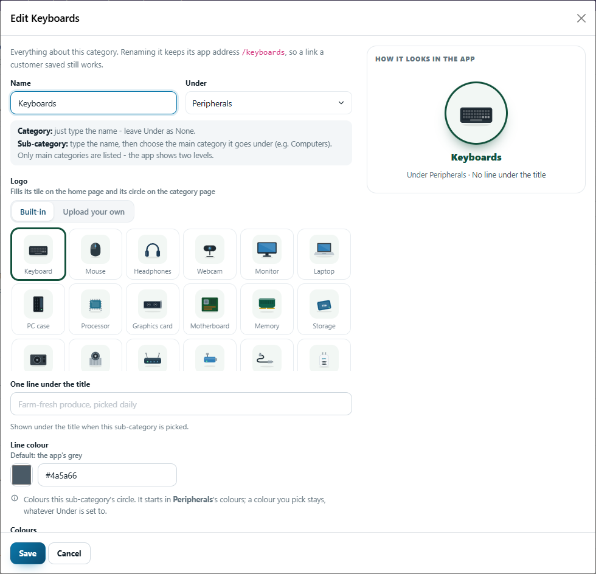
Figure 4 — Edit Keyboards (a sub-category under Peripherals): the Built-in tab with the Keyboard picture chosen, shown in the round preview on the right.
An uploaded picture always wins over a built-in one. Picking a built-in one again replaces the upload; Remove goes back to the built-in one.
Figure 5 — Crop the logo for a sub-category: the crop square on the left, the size note (“Full tile: 104 × 104 px”), a warning that a 150 × 150 picture will look soft, and the home page and category page previews.
Tip: For a sub-category use a picture at least 512 × 512; it is saved at that size. A main category's mark is shown tiny (18 × 18 on the top bar) — a simple, bold PNG with a transparent background reads best.
5App address, order and the full form
A few things are deliberately not changed on the desk. Open Advanced → Catalog (all views) (Owner only), or press All views on the Catalog desk. It opens a board with each card in the category's own colours, and a list:
List columns — Category, Inside (its main category), App address, Products, Description, and an In the app switch. Background and Heading can be added from the optional columns.
Order — drag the handle at the left of each row. The app lists main categories, and the sub-categories inside each, in this order.
Filters — Top level, Sub-categories, Hidden from the app, No description; group by Inside.
Open a category to see its form. The 369 Mart app section holds Show in the app (on by default), App address, Products in the app (read-only), Background, Heading colour, One-line description, Line colour, the built-in logo for its level and Uploaded logo.
Important: The App address is filled in from the name when a category is made, and a rename never changes it, because a customer may have saved the link. Change it by hand only when you must: it may use only lowercase letters, numbers and hyphens, and two categories cannot share one. Changing it breaks any link a customer has saved.
Good to know: The picture at the top of this form is the website shop's own category photo, not the app's logo. The app's logo is Uploaded logo in the 369 Mart app section, best set and cropped on the desk.
6Put products in categories, and give them a brand
You file a product under a category by setting its Category on the product; its place in the app follows. A category's product count, and what the app lists in it, include only products that are published, active and not services — in the category itself or in any sub-category below it.
Brand — a field this module adds to products. It is printed on the product card, it is what the Brand filter on a category page groups by, and the search box matches it. Left empty, the app falls back to the pack size, so fill it in.
Good to know: On install, the five example categories of the home page sample (such as Fresh Fruits and Daily Essentials) are switched to hidden if they have no products, so they do not lead your category list. They are hidden, not deleted — press Show to bring one back.
Part 2 — Everyday Use
The three desks under 369 Mart → Catalogue. Each refreshes on its own every minute or two, so it can stay open on a second screen.
1Your three desks
Desk
What it is for
Catalog
“The groups a shopper sees in the app, and how each one looks.” Add, edit, hide and show categories.
Products
“Every product for sale, how many are left, and which storefront sells it.” Read-only.
Searches
“What customers typed into the app, and what it found them.” The one thing you change is whether a term is suggested.
On every desk the tiles count the whole shop, never just the rows on screen, and a tile you can press is also a filter. If the desk cannot load, a line says “We could not reach the shop.” with a Try again link.
2The Catalog desk
Open Catalogue → Catalog. At the top, four tiles: In the app, Hidden, Standing empty (turns amber when not zero) and Products a shopper can reach — each product counted once, however many groups it sits in. Below them, the tabs All, In the app, Hidden, Standing empty, and a search box that matches a category's name or its app address.
Each main category is a heading in its own colours, with its sub-categories listed under it. Each row shows the logo (or “Aa” in its colours), the name, the app address, the number of products, and for a main category how many sub-categories it has. A Hidden pill means it is switched off in the app; Nothing in it means no published product.
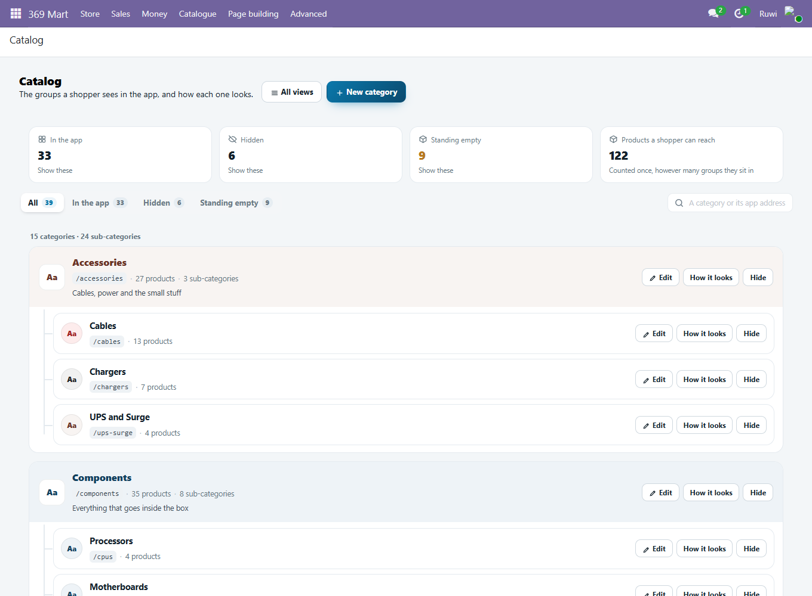
Figure 6 — The Catalog desk: the four tiles, the tabs with counts, “15 categories · 24 sub-categories”, and Accessories and Components as headings with their sub-categories under them, each with Edit, How it looks and Hide.
Every row has three buttons:
Edit — everything about the category: name, Under, logo and look. Renaming keeps the app address, so a saved link still works.
How it looks — only the logo, the line under the title and the colours. The name and address are not changed here.
Hide / Show — takes the category out of the app, or puts it back, in one click.
Saving shows “Saved.” If you search for a sub-category whose main category does not match, the main category still appears above it as a plain heading marked “Main category · not in this list”, so a sub-category is never shown without its home.
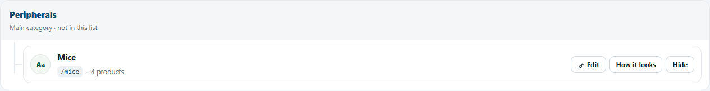
Figure 7 — Searching for Mice: Peripherals is kept above it as a plain heading, “Main category · not in this list”.
Good to know: The staff console has a Catalog screen laid out the same way, with the same tiles, tabs and buttons. A change made on either one shows on the other.
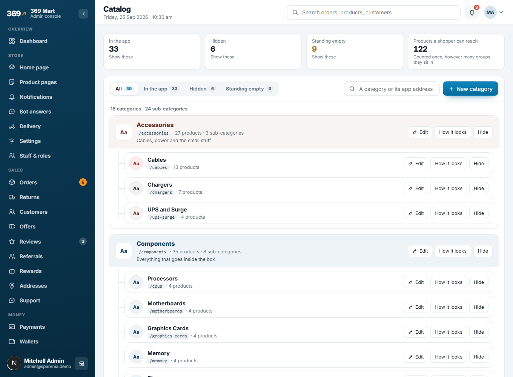
Figure 8 — The staff console's Catalog screen: the same tiles, tabs, New category button and grouped rows.
3The Products desk
Open Catalogue → Products. It lists every product that can be sold. Four tiles sit on top: Products, Stock value (what is in stock times the sales price), Low stock and Out of stock — the last two are buttons that filter the list.
Tabs — All, Low, Out of stock, Hidden (products not published in the shop).
Search — by name or code (article ID).
Category — All categories, or one category shown in the app (it includes its sub-categories).
Storefront — Both storefronts, Quick or Express. A product is Express when it has a delivery time set, otherwise Quick.
Sort — Lowest stock (the default), Best selling, Highest price, Name A-Z.
The table shows Product (photo, name, unit and code), Category, Delivery (Express or Quick), Price, Sold / 7d (units on confirmed orders in the last seven days), In stock and Live (Live or Hidden). Low rows are tinted amber and out-of-stock rows red. It shows 50 at a time — press Show more for the rest. Click a row to open that product's own form, where price, stock and publishing are really changed.
Good to know:In stock is what is on hand and not already promised to an order — the same number the shop's product card uses. A product not counted in stock (a service, for example) shows “-”. Low means at or below the product's own low-stock number (the one behind “Only N left”). If stock is not tracked at all, the desk says “Inventory is not installed, so stock is not tracked.”
4The Searches desk
Open Catalogue → Searches. The tiles are Searches (“Every search, counted”), Different terms, Found nothing (red when not zero) and Not suggested. When anything found nothing, a red line spells it out, e.g. “1 term found nothing, over 3 searches. That is what customers wanted and the shop does not stock.”
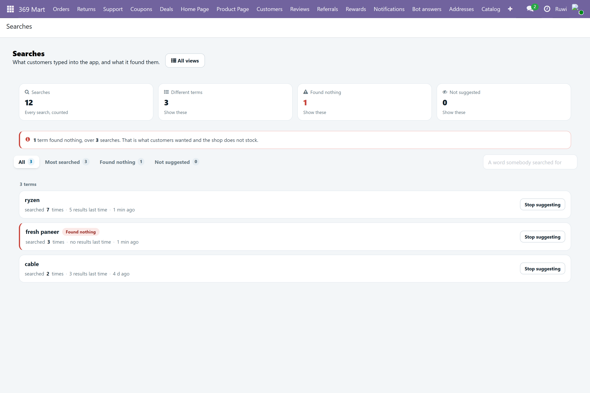
Figure 9 — The Searches desk: 12 searches over 3 different terms, the red line about the one term that found nothing, and three terms — “fresh paneer” marked Found nothing.
The tabs are All and Most searched (most searched first), Found nothing and Not suggested (most recent first). Each row shows the term, how many times it was searched, how many results it found last time and how long ago. On the right is the Suggest to shoppers switch:
On (the default) — the term may appear in the app's Trending list.
Off — it is never suggested to shoppers, and the row shows Not suggested. It is still counted. Use it for anything misspelt or embarrassing.
Tip: Read the Found nothing tab every week. Each row is something customers asked for — add the product, or fix the name or brand of one you already have so the search finds it.
5What the customer sees
Everything above reaches the app on its own:
Top bar — each main category in the app is a pill, in your order, with its logo. A hidden category is not there.
Home page tiles — a home tile linked to a category wears that category's background and heading colour, so recolouring a category recolours its tile. A tile whose picture is set to “The category's logo” shows that logo.
Category page — a header in the category's colours with its name and one line under the title, then a circle for each sub-category in its own colours and logo, then the products, with filters for brand, price and the product's options.
Search box — matches product name, brand, pack size and category name. As the shopper types, up to eight products appear under the box. Trending shows up to six of the most-searched terms that are allowed and found something.
Product cards — the star rating from published reviews (a product with no reviews shows no stars), popularity from units sold on confirmed orders, and the Brand.
Offers page — under Deals of the day, every product on a live deal (set under Sales → Deals) or priced below its own MRP, biggest saving first, with the pills All deals, 20%+ off, 30%+ off and 40%+ off. A timer counts down to the end of the first deal among the products shown, with days when more than a day is left. If none of them has an end date, there is no timer. At zero the page loads again and the ended deals drop off. Coupons for you appears only when a coupon is live, and an empty page says No deals right now.
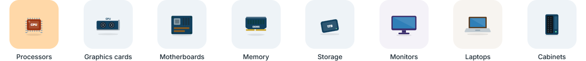
Figure 10 — Home page tiles in their categories' colours: Processors set to orange, the others in their own pale colours.
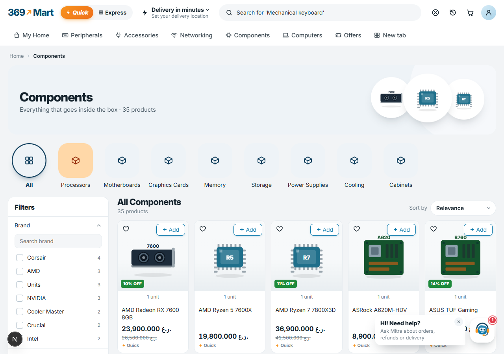
Figure 11 — The Components page in the shop: its header and line “Everything that goes inside the box”, the sub-category circles with Processors in orange, the Brand filter and the product cards.
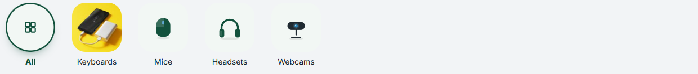
Figure 12 — Sub-category circles: Keyboards with an uploaded picture filling its tile; Mice, Headsets and Webcams with built-in pictures.
Good to know: A category that is in the app but has no products yet still opens — the page simply has nothing in it. Shoppers who are signed in also see their own recent searches (up to eight, newest first), on any device they use.
Part 3 — Keeping It Secure & In Order
1Who can do what
Role
What they can do
Owner
Everything: the three desks, plus Catalog (all views) and Searches (all views) — the app address, the order and the full category form.
Manager
The Catalog, Products and Searches desks (through the Website designer right): add, edit, hide and show categories; turn Suggest to shoppers on or off. Cannot add or delete search terms.
Packer, Accountant, Rider
No Catalogue menu entries from this module.
Internal user
May read search counts, but sees no menu for them.
Shopper
Browses and searches the app; sees only their own recent searches.
2What cannot be changed, on purpose
Search counts — the term, how often it was searched, its results and the date are records of what really happened. No screen can edit them; only Suggest to shoppers can be changed.
App address — never changed by a rename, and only editable in the full form (Owner).
Stock — the Products desk is read-only; a count typed there would soon disagree with the real stock.
Deleting — the desks have no delete button. Hide a category instead. If a product Category is deleted, its matching app category is kept but taken out of the app, because a customer may have its link.
3The full search list
Advanced → Searches (all views) (Owner) is the plain list behind the Searches desk, for grouping, saved filters and exporting. Columns: Searched for, Times, Results, Last searched and an Allow in Trending switch. Rows that found nothing are red; rows blocked from Trending are greyed. Filters: Found nothing, Blocked from Trending, Searched this week. Terms cannot be added by hand.
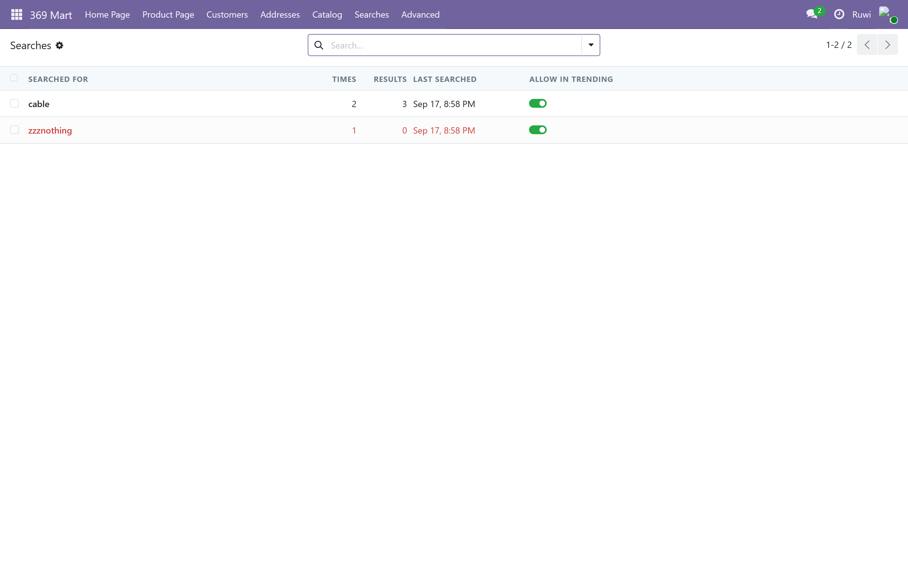
Figure 13 — Searches (all views): “cable” searched 2 times with 3 results, and “zzznothing” in red with 0 results; both allowed in Trending.
How a search is counted: only when the shopper actually searches, not on every letter typed. Capitals and extra spaces are ignored, so “Dark Chocolate” and “dark chocolate” count as one term. Terms shorter than 2 or longer than 64 characters are not counted.
4Privacy
The search counts are not linked to any customer — they are a tally, not a history. Each customer's own recent searches are kept on their account, can be cleared by them in the app, and are never shown to another customer. A visitor who is not signed in has no recent searches kept. Staff desks do not show anyone's recent searches.
Status reference — categories
State
Meaning
How to change it
In the app
Shown to shoppers (Show in the app on). A main category gets a pill and a page.
Press Hide on the Catalog desk.
Hidden
Kept in the backend but not shown in the app. Hiding a main category also takes its page and sub-categories out of the app.
Press Show.
Standing empty / Nothing in it
No published product in it or under it.
Publish products and set their Category.
Status reference — search terms
State
Meaning
How to change it
Found nothing
The last search for it returned no products.
Stock the item, or fix a product's name or Brand.
Not suggested
Still counted, never offered in Trending.
Turn Suggest to shoppers back on.
Suggest to shoppers on
Allowed in Trending. Once it has found something, it can be one of the six most searched shown there.
—
Where each setting shows
Setting
Main category
Sub-category
Background
Fills the category page header
Fills its circle
Heading colour
Colours the All tile; new sub-categories start with it
Rings its circle and colours its name
Logo
Small mark on its pill in the top bar
Fills its home page tile and its circle
One line under the title
Under the title on its page
Under the title when the sub-category is picked
Line colour (empty)
The app's grey
Its main category's line colour
Quick tips
Two levels only: main categories, and sub-categories under them.
Pick a colour pair first, then fine-tune Background or Heading colour if needed.
Renaming a category is safe — its app address and customers' saved links stay the same.
Hide a category instead of deleting it.
Upload sub-category logos at 512 × 512 or bigger.
Fill in Brand on every product — the Brand filter and search use it.
Check the Found nothing tab on the Searches desk every week.
Switch off Suggest to shoppers for misspelt or awkward terms; they keep being counted.
If something goes wrong
What you see
What to do
A category is missing from the app
On the Catalog desk check for the Hidden pill and press Show. If it is a sub-category, check its main category is not hidden too.
A category shows “Nothing in it”
Its products are not published, or their Category is set to something else. Check the products on the Products desk (Hidden tab).
“A colour looks like #e8f5e9…”
Type the colour as # plus six letters or numbers, or pick one of the ten colour pairs.
Under is locked
The main category has sub-categories. Move each of them under another main category first.
“Sub-categories go under a main category…”
You chose a sub-category in Under. Choose a main category instead.
Logo refused (“too big” or “has to be a PNG, JPEG, WebP or GIF”)
Crop it in the Crop the logo window, or save it as a PNG or JPEG under 5 MB and try again.
“Two categories cannot share the same app address”
In Catalog (all views), give one of them a different App address (lowercase letters, numbers and hyphens).
A wrong word shows in Trending
On the Searches desk find the term and turn Suggest to shoppers off.
“We could not reach the shop.”
Press Try again. If it keeps happening, reload the page or check your connection.